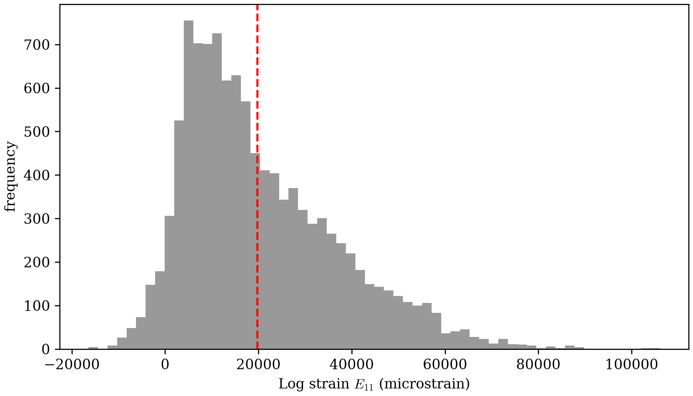

High Point Density
Simple Stretch Revisited
capped out at 250 points — the most x values that stay integer-safe
at factor_x = 1.02, within the image's own margins. Subpixel
Accuracy removed that ceiling: once tracking
doesn't need its answer to be a whole pixel, x doesn't need to be a
multiple of 50 either. This page pushes all the way to VIC-2D's own
density — 5 pixels apart, the same 53x54, 2862-point grid Verification
Against VIC-2D and
Subpixel Accuracy both already used.
Tracking at Full Density
Verification Against VIC-2D
noted VIC-2D's own kernel size: 25 x 25 px. Earlier pages' tracking
calls all used a much larger, generously-sized kernel and search area,
never tuned to match. Here, matching VIC-2D's own geometry is the point,
so kernel_margin_width/kernel_margin_height target VIC-2D's 25 x 25 as closely as a whole-pixel margin allows.
The closest whole-pixel match, kernel_margin = 12 (a 24 x 24 px
kernel), was tried first and rejected: checked directly against each
point's own known true position, it produced real mismatches at several
points — not sub-pixel noise, but tracking landing several pixels from
the right answer entirely. A 24 x 24 px window is apparently too
small, at this image's own speckle density, to always contain enough
distinctive texture for a unique correlation match. kernel_margin = 13
(26 x 26 px, one pixel larger than VIC-2D's own kernel) tracks cleanly
— zero mismatches across all 2862 points. VIC-2D's own search area size
isn't published; search_margin = 25 (a generous 50 x 50 px) is
chosen for headroom, not to match an unknown number. One more change
from earlier pages: upsample_factor = 100, not Subpixel
Accuracy's own 10 —
Distribution Across the Full Mesh
below explains why this page needs the finer value even though that one
didn't:
from dictk.grid import generate, locate_subpixel
points = generate(
origin=PixelCoordinate(x=18, y=16),
count_x=53,
count_y=54,
spacing_x=5,
spacing_y=5,
)
found = locate_subpixel(
reference_image=reference_image,
current_image=current_image,
reference_points=points,
kernel_margin_width=13,
kernel_margin_height=13,
search_margin_width=25,
search_margin_height=25,
upsample_factor=100,
)
2862 points tracked
Strain at Full Density
Same recipe as Simple Stretch Revisited: dictk.grid.elements
for connectivity (2756 elements this time, not 196), then
gauss_point_log_strains/gauss_point_coordinates
at each of the resulting 11024 Gauss points. Node numbers stay off —
2862 of them would be unreadable. element_strain_plot's default
marker size (s=150) was sized for sparse meshes; at 5px point
spacing it draws neighboring Gauss points as one solid overlapping
mass, not a legible field. dot_size=6 keeps individual markers from
overlapping, and marker="s" (square, not the default circle) tiles
them edge to edge with no gaps — circles, even sized to just touch,
leave small diamond-shaped gaps at their corners, since tangent circles
never fully cover a plane. show_mesh_lines=False drops the element
outlines too — at this density the black grid lines fight the colored
points for attention without adding information, and the tiled squares
already read as a continuous field on their own:
from dictk.element import gauss_point_coordinates, gauss_point_log_strains
from dictk.grid import elements
from dictk.plot import element_strain_plot
element_indices = elements(count_x=53, count_y=54)
values = []
coordinates = []
for element in element_indices:
reference_corners = [points[i] for i in element]
current_corners = [found[i] for i in element]
strains = gauss_point_log_strains(
reference_points=reference_corners, current_points=current_corners
)
values.extend(strain[0, 0] for strain in strains)
coordinates.extend(gauss_point_coordinates(points=current_corners))
element_strain_plot(
points=found,
elements=element_indices,
coordinates=coordinates,
values=values,
label=r"Log Strain, $E_{11}$",
dot_size=6,
marker="s",
show_mesh_lines=False,
path="high_point_density_strain_gauss_points.png",
)
element_strain_plot(
points=found,
elements=element_indices,
coordinates=coordinates,
values=values,
label=r"Log Strain, $E_{11}$",
dot_size=6,
marker="s",
show_mesh_lines=False,
image=current_image,
path="high_point_density_strain_on_current.png",
)


current_image.Verification Against VIC-2D's
own field image has a fixed colorbar, 17560 to 22360 microstrain —
and its own particular 16-band color scale, not a generic rainbow.
Sampled directly from that image's own legend (not approximated by a
built-in colormap name), the same 16 colors, forced onto dictk's own
field at the same vmin/vmax, make the two directly comparable:

dictk's own
; both `17560`-`22360` microstrain, both VIC-2D's own
16-band color scale, sampled directly from its own legend). Most of
dictk's own field falls outside that range entirely —
only 9.5% of its 11024 Gauss points land inside `[17560, 22360]`;
52.9% are below it (solid magenta, clipped to the scale's own
floor) and 37.7% are above it (solid red, clipped to the ceiling).
The vertical striations survive the clipping — visible as bands of
solid red against solid magenta — but the color variety VIC-2D's
own field shows is gone, since almost none of dictk's
own values actually sit inside the narrow band VIC-2D's field
stays within.Show the figure-generating code
from dictk.plot import element_strain_plot
from matplotlib.colors import ListedColormap
import numpy as np
# Sampled directly from VIC-2D's own colorbar image -- its own 16
# discrete color bands, magenta (low) to red (high), not a generic
# rainbow colormap standing in for it.
vic2d_colors = [
(0.8314, 0.0000, 1.0000),
(0.5176, 0.0000, 1.0000),
(0.1843, 0.0000, 1.0000),
(0.0000, 0.1333, 1.0000),
(0.0000, 0.4510, 1.0000),
(0.0000, 0.7843, 1.0000),
(0.0000, 1.0000, 0.8980),
(0.0000, 1.0000, 0.5843),
(0.0000, 1.0000, 0.2510),
(0.0667, 1.0000, 0.0000),
(0.3843, 1.0000, 0.0000),
(0.7176, 1.0000, 0.0000),
(1.0000, 0.9686, 0.0000),
(1.0000, 0.6510, 0.0000),
(1.0000, 0.3176, 0.0000),
(1.0000, 0.0000, 0.0000),
]
vic2d_cmap = ListedColormap(vic2d_colors)
micro_values = np.array(values) * 1e6
element_strain_plot(
points=found,
elements=element_indices,
coordinates=coordinates,
values=micro_values,
label=r"Log Strain, $E_{11}$ (microstrain)",
image=current_image,
dot_size=6,
marker="s",
show_mesh_lines=False,
cmap=vic2d_cmap,
vmin=17560,
vmax=22360,
figsize=(6.9, 6.0),
path="high_point_density_strain_vic_colorbar.png",
)
Saved: high_point_density_strain_vic_colorbar.png
A Real Trade-Off, Not a Bug
2862-point, 5px-spacing mesh: mean = 0.0205 (true value is ), but std = 0.0165, range [-0.0164, 0.1061]
The mean is close but not exact. The spread is not small. Unlike Simple Stretch Revisited's perfectly uniform result, individual elements here scatter well beyond the true value — some report negative strain, some report more than 5 times the true value.
This isn't a tracking bug. Log strain is, in effect, a finite
difference: , a displacement difference
divided by element size . Subpixel Accuracy's
own measurement found locate_subpixel's residual error is small in
absolute terms — a few hundredths of a pixel, on average — but at 5
pixels of element spacing, that same absolute error is a much larger
fraction of than it was at Simple Stretch Revisited's 50-pixel
spacing. The smaller the element, the more a fixed amount of tracking
noise gets amplified into strain noise. Checked directly, not just
argued:
| Element spacing | Mean E11 | Std E11 |
|---|---|---|
| 5px | 0.02012 | 0.01653 |
| 10px | 0.01968 | 0.01268 |
| 20px | 0.01982 | 0.00997 |
| 40px | 0.01980 | 0.00347 |
Standard deviation falls as element spacing grows — the same tracking
noise, spread over a larger , moves less of the resulting strain.
This is exactly why VIC-2D and other commercial DIC packages offer a
strain window — averaging displacement over several subsets before
computing strain, trading spatial resolution for strain precision.
dictk doesn't implement that averaging yet. This page's own dense
mesh is accurate on average and honestly noisy point to point, not
silently smoothed into looking better than the underlying tracking
supports.
Distribution Across the Full Mesh
The mean/std/range summary above collapses the 11024 Gauss point numbers into four. The full distribution, the same way Verification Against VIC-2D plotted one for VIC-2D's own 2682 measurements, shows more:
import numpy as np
import matplotlib.pyplot as plt
micro = np.array(values) * 1e6
analytical = np.log(factor_x) * 1e6
plt.rcParams.update({"font.family": "serif", "mathtext.fontset": "cm"})
fig, ax = plt.subplots(figsize=(7, 4), constrained_layout=True)
ax.hist(micro, bins=60, color="gray", alpha=0.8)
ax.axvline(analytical, color="red", linestyle="--", linewidth=1.5)
ax.set_xlabel(r"Log strain $E_{11}$ (microstrain)")
ax.set_ylabel("frequency")
fig.savefig("high_point_density_strain_histogram.png", dpi=300)
Saved: high_point_density_strain_histogram.png

dictk's own across all 11024 Gauss points at full VIC-2D density (gray, 60 bins). The dashed red line marks the same analytical value as Verification Against VIC-2D's own histogram, microstrain. Unlike that page's multi-clustered distribution, this one is a single smooth, right-skewed peak — but a much wider one: individual Gauss points range from about -16400 to 106100 microstrain, over 21 times VIC-2D's own roughly 17300-23100 microstrain spread.dictk's own mean, 20464.3 microstrain, is close to VIC-2D's own
measured mean, 19875.8 microstrain, but not as close as
Verification Against VIC-2D's
earlier comparison found. That page's dictk value came from exact,
integer-pixel tracked positions on a 12-point sample; it landed within
0.02% of the analytical . This page's dictk value comes
from real subpixel-tracked positions on all 2862 points — the same
kind of measurement VIC-2D itself makes — and lands 3.3% from the
analytical value, noisier than VIC-2D's own 0.4%. Averaging over more
points doesn't fix this: the histogram's long right tail, not evenly
spread noise, is what pulls the mean away from the true value.
One methodological detail behind this figure is worth stating plainly.
At upsample_factor = 10 — Subpixel Accuracy's
own choice, adequate there — this same histogram doesn't look like the
smooth curve above. It separates into sharp, evenly-spaced spikes,
roughly 20000 microstrain apart. That spacing isn't a coincidence:
upsample_factor = 10 resolves displacement to steps of 0.1 px, and
0.1 / 5 = 0.02, or 20000 microstrain, at this mesh's own 5px element
spacing — exactly the gap between spikes. The clusters are an artifact
of how finely displacement gets quantized, not a real feature of the
tracked field. upsample_factor = 100 shrinks that same step to 2000
microstrain, well under the histogram's own bin width, and the spikes
disappear into the smooth distribution shown above. Mean and std barely
move between the two (std actually falls slightly, from 17776 to 16531
microstrain) — the real spread was already present at
upsample_factor = 10; only its artificially blocky shape needed the
finer value to go away. Subpixel Accuracy uses this same 5px grid and
the same 10, without hitting this problem, because it only ever
measures raw displacement error directly — it never divides by an
element size. This page does, computing strain as , and
dividing by a small turns a small, fixed quantization step into a
large one. That's the actual reason upsample_factor needed to change
here and not there — not point density, but what gets computed from
the tracked positions afterward.
That leaves a real question: why does a genuine, non-artifactual spread
show up in both tools, when each measured the exact same noiseless
synthetic deformation? A Real Trade-Off, Not a
Bug above already covered half of it:
strain amplifies whatever tracking error already exists. The other half
is why tracking error exists at all, for both tools. dictk's
locate_subpixel and VIC-2D's own optimizer are both correlation-based
subpixel estimators. Each locates a peak in a similarity surface built
from real image content, not a value handed to it directly. How sharply
that peak is defined depends on how much distinctive texture falls
inside the kernel at that particular location. Strong, varied speckle
contrast pins the peak precisely. A locally flatter or more repetitive
patch leaves it ambiguous, and the estimated position drifts toward
whichever direction the ambiguity favors. That drift is a deterministic
function of local image content, not a random draw — exactly why the
field figure above shows structured striations instead of uniform
static, and why this page's own histogram leans right instead of
sitting symmetric around the true value. It's also consistent with part
of why dictk's own spread grew on this page: matching VIC-2D's own
small px kernel, instead of earlier pages' generously
oversized ones, means averaging over less independent texture per
point. Some of that extra spread is the expected cost of matching
VIC-2D's own geometry, not a shortcoming unique to dictk.
Point count, tracking accuracy, and now strain precision have all been
free variables throughout Simple Stretch, Subpixel Accuracy, and this
page. How dictk's own tracking time scales as point count grows —
across sequential, threaded, and multi-process execution — is
Parallelization's own question, still not
attempted here either.